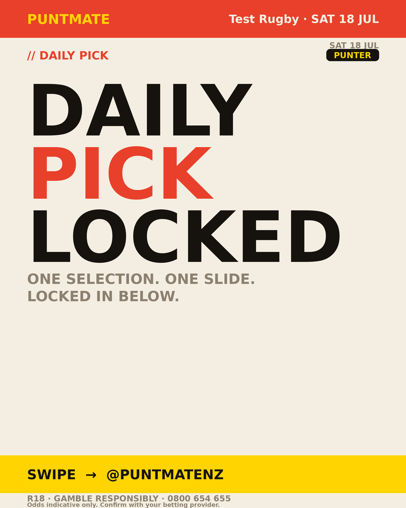
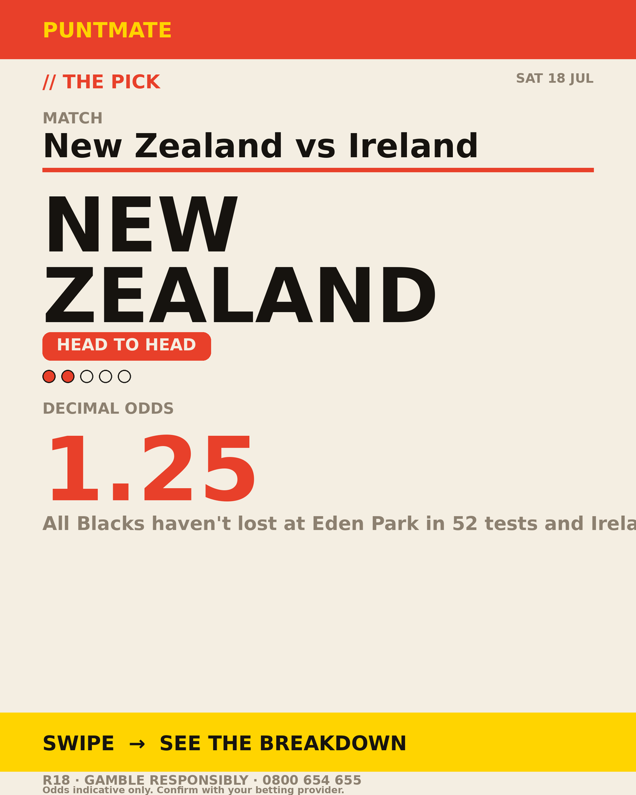
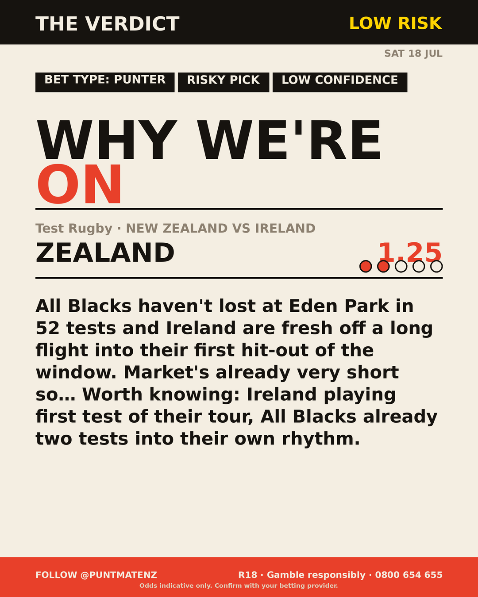

*🎯 PUNTMATE NZ — Test Rugby* 🏟 New Zealand vs Ireland *PICK:* NEW ZEALAND *ODDS:* 1.25 (Head to Head) *BET TYPE: PUNTER* _All Blacks haven't lost at Eden Park in 52 tests and Ireland are fresh off a long flight into their first hit-out of the window. Market's already very short so… Worth knowing: Ireland playing first test of their tour, All Blacks already two tests into their own rhythm._ Keep this one light — the value's there but so is the uncertainty. ────────────────── 📲 Join Telegram for daily picks R18 · Gamble responsibly · Problem Gambling Foundation NZ: 0800 664 262
🎯 Test Rugby — New Zealand vs Ireland NEW ZEALAND @ 1.25 (Head to Head) BET TYPE: PUNTER Solid touch here. Not a lock, but the value's real and the form backs it up. All Blacks haven't lost at Eden Park in 52 tests and Ireland are fresh off a long flight into their first hit-out of the window. Market's already very short so… Keep this one light — the value's there but so is the uncertainty. Follow for daily value picks → @puntmatenz Problem Gambling Foundation NZ: 0800 664 262 #PuntmateNZ #SportsBetting #NZTAB #TestRugby
| has_pick | True |
| pick_id | 2026-07-18_New_Zealand_vs_Ireland_dryrun |
| run_id | dryrun-weekend-multi |
| generated_at | 2026-07-18T07:33:28.003000+00:00 |
| post_date | 2026-07-18 |
| match | New Zealand vs Ireland |
| sport | rugbyunion_international |
| sport_label | Test Rugby |
| market | Head to Head |
| selection | NEW ZEALAND |
| odds | 1.25 |
| bet_type | PUNTER_BET |
| bet_type_label | BET TYPE: PUNTER |
| bet_type_reason | Solid touch here. Not a lock, but the value's real and the form backs it up. All Blacks haven't lost at Eden Park in 52 tests and Ireland are fresh off a long flight into their first hit-out of the window. Market's already very short so… |
| classification | RISKY_PICK |
| risk | RISKY_PICK |
| confidence | LOW |
| confidence_label | LOW |
| final_explanation | All Blacks haven't lost at Eden Park in 52 tests and Ireland are fresh off a long flight into their first hit-out of the window. Market's already very short so… Worth knowing: Ireland playing first test of their tour, All Blacks already two tests into their own rhythm. |
| public_caution | Keep this one light — the value's there but so is the uncertainty. |
| theme | night |
| carousel_paths | ['data/review/2026-07-18_New_Zealand_vs_Ireland_dryrun/cover.png', 'data/review/2026-07-18_New_Zealand_vs_Ireland_dryrun/tip.png', 'data/review/2026-07-18_New_Zealand_vs_Ireland_dryrun/breakdown.png'] |
| carousel_urls | ['https://raw.githubusercontent.com/kingofthecastle24/puntmate/main/data/cards/2026-07-18_New_Zealand_vs_Ireland_night_1_cover.png', 'https://raw.githubusercontent.com/kingofthecastle24/puntmate/main/data/cards/2026-07-18_New_Zealand_vs_Ireland_night_2_tip.png', 'https://raw.githubusercontent.com/kingofthecastle24/puntmate/main/data/cards/2026-07-18_New_Zealand_vs_Ireland_night_3_breakdown.png'] |
| story_path | None |
| story_url | None |
| intended_platforms | ['telegram', 'instagram_feed', 'facebook'] |
| workflow_state | GENERATED |